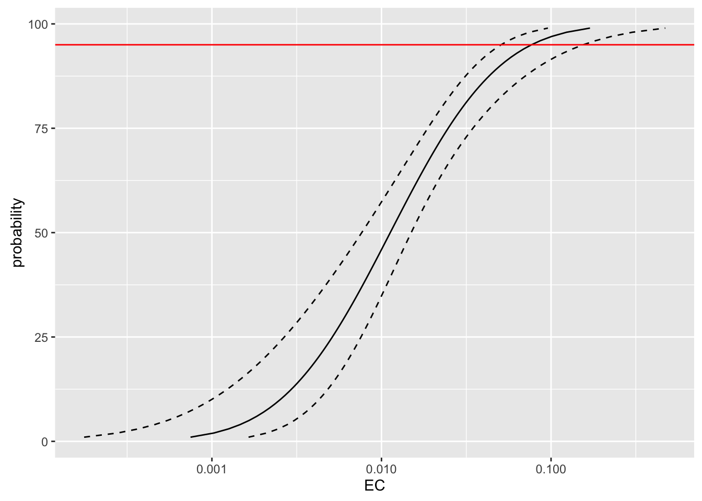

posi=c(11,15,23,29,32,32,32)
total=c(30,30,32,32,32,32,32)
conce=c(0.006,0.014,0.025,0.05,0.15,0.3,0.5)binomial(link="probit")LD <- function(r, n, d, conf.level) {
#Set up a number series
p <- seq(1, 99, 1)
#r=number responding, n=number treated, d=dose (untransformed), confidence interval level
mod <- glm(cbind(r, (n-r)) ~ log10(d), family = binomial(link=probit))
#Calculate heterogeneity correction to confidence intervals according to Finney, 1971
#(p.72, eq. 4.27; also called "h")
het = deviance(mod)/df.residual(mod)
if(het < 1){het = 1}
#Heterogeneity cannot be less than 1
#Extract slope and intercept
summary <- summary(mod, dispersion=het, cor = F)
intercept <- summary$coefficients[1]
interceptSE <- summary$coefficients[3]
slope <- summary$coefficients[2]
slopeSE <- summary$coefficients[4]
z.value <- summary$coefficients[6]
N <- sum(n)
#Intercept (alpha)
b0<-intercept
#Slope (beta)
b1<-slope
#Slope variance
vcov = summary(mod)$cov.unscaled
var.b0<-vcov[1,1]
#Intercept variance
var.b1<-vcov[2,2]
#Slope intercept covariance
cov.b0.b1<-vcov[1,2]
#Adjust alpha depending on heterogeneity (Finney, 1971, p. 76)
alpha<-1-conf.level
if(het > 1) {talpha <- -qt(alpha/2, df=df.residual(mod))} else {talpha <- -qnorm(alpha/2)}
#Calculate g (Finney, 1971, p 78, eq. 4.36)
#"With almost all good sets of data, g will be substantially smaller than 1.0 and seldom greater than 0.4."
g <- het * ((talpha^2 * var.b1)/b1^2)
#Calculate theta.hat for all LD levels based on probits in eta
#(Robertson et al., 2007, pg. 27; or "m" in Finney, 1971, p. 78)
eta = family(mod)$linkfun(p/100) #probit distribution curve
theta.hat <- (eta - b0)/b1
#Calculate correction of fiducial limits according to Fieller method
#(Finney, 1971, p. 78-79. eq. 4.35)
const1 <- (g/(1-g))*(theta.hat + cov.b0.b1/var.b1)
const2a <- var.b0 + 2*cov.b0.b1*theta.hat + var.b1*theta.hat^2 - g*(var.b0 - (cov.b0.b1^2/var.b1))
const2 <- talpha/((1-g)*b1) * sqrt(het * (const2a))
#Calculate the confidence intervals LCL=lower, UCL=upper
#(Finney, 1971, p. 78-79. eq. 4.35)
LCL <- (theta.hat + const1 - const2)
UCL <- (theta.hat + const1 + const2)
#Calculate variance for theta.hat
#(Robertson et al., 2007, pg. 27)
var.theta.hat <- (1/(theta.hat^2)) * ( var.b0 + 2*cov.b0.b1*theta.hat + var.b1*theta.hat^2 )
#Make a data frame from the data at all the different values
ECtable <- data.frame(
"probability"=p,
"N"=N,
"EC"=10^theta.hat,
"LCL"=10^LCL,
"UCL"=10^UCL,
"slope"=slope,
"slopeSE"=slopeSE,
"intercept"=intercept,
"interceptSE"=interceptSE,
"z.value"=z.value,
"chisquare"=deviance(mod),
"df"=df.residual(mod),
"h"=het,
"g"=g,
"theta.hat"=theta.hat,
"var.theta.hat"=var.theta.hat)
#Select output level
return(ECtable)
}
conf.level=0.95
LoD.level=95
test <- LD(posi,total,conce,conf.level)
print(paste("LoD", "= ", round(test[LoD.level,"EC"], 3) , ',',conf.level*100, "% CI= ",round(test[LoD.level,"LCL"], 3),"-", round(test[LoD.level,"UCL"], 3)))## [1] "LoD = 0.077 , 95 % CI= 0.051 - 0.155"library(ggplot2)
ggplot(test, aes(y=probability))+
geom_line(aes(x=EC))+
geom_line(aes(x=LCL), linetype=2)+
geom_line(aes(x=UCL), linetype=2)+
geom_hline(yintercept = 95, color='red')+
scale_x_log10()